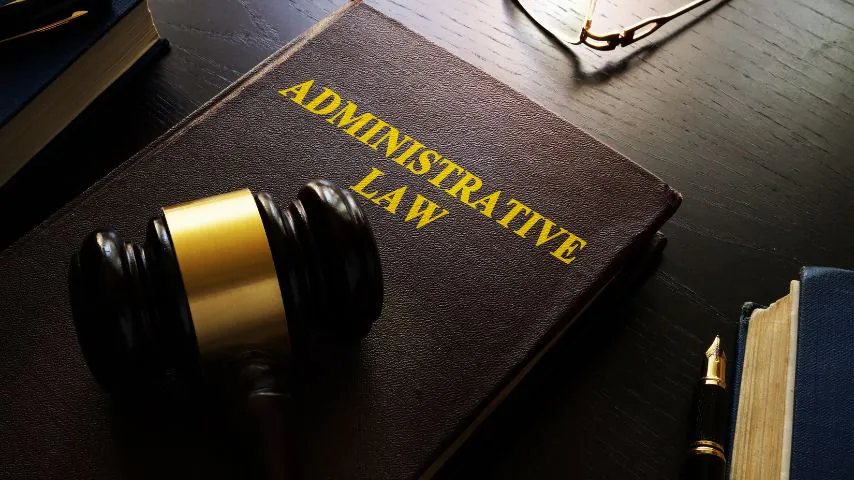

Prawo Karne
Mateusz Irzyk
Prawo Karne
Prawo karne to jeden z głównych obszarów prawa publicznego, który zajmuje się odpowiedzialnością za czyny uznane przez państwo za przestępstwa. Jego głównym zadaniem jest ochrona społeczeństwa przed działaniami, które naruszają porządek prawny i godzą w dobra chronione, takie jak życie, zdrowie, mienie czy wolność.
To system norm, które precyzyjnie określają, jakie czyny są zabronione oraz jakie kary grożą za ich popełnienie.
Podstawowym celem prawa karnego jest zapewnienie porządku i bezpieczeństwa publicznego. Obejmuje ono zarówno prewencję (zapobieganie przestępstwom), jak i represję (karanie sprawców). Prawo karne ma na celu odstraszanie potencjalnych przestępców, a także resocjalizację sprawców, aby powrócili do społeczeństwa jako pełnoprawni i przestrzegający prawa obywatele.
Definicja i Podział
Prawo karne materialne określa, co jest przestępstwem oraz jakie kary mogą zostać wymierzone za jego popełnienie. To w nim znajdziemy dokładne przepisy mówiące o tym, jakie czyny są zakazane oraz jakimi sankcjami są zagrożone, np. kradzież, oszustwo, czy zabójstwo. Kodeks karny to najważniejszy dokument regulujący tę dziedzinę.
Prawo karne procesowe dotyczy procedur związanych z prowadzeniem postępowań karnych. Reguluje zasady działania sądów, prokuratury oraz policji podczas dochodzenia i procesu. Obejmuje takie elementy jak dowody, prawa oskarżonych, przebieg rozprawy oraz zasady orzekania o winie.
Prawo karne wykonawcze zajmuje się tym, jak wykonywane są orzeczone kary. W ramach tej dziedziny ustala się m.in. warunki odbywania kary pozbawienia wolności, zasady przyznawania warunkowego przedterminowego zwolnienia czy też wykonywania grzywny.
Funkcje prawa karnego
Jedną z najważniejszych funkcji prawa karnego jest funkcja prewencyjna. Ma ona na celu zapobieganie przestępstwom poprzez odstraszanie potencjalnych przestępców. Działanie prawa karnego w tym zakresie polega na wytwarzaniu w społeczeństwie świadomości, że za złamanie prawa grożą konkretne sankcje.
Oznacza to, że prawo karne działa nie tylko w stosunku do tych, którzy już popełnili przestępstwo, ale także do tych, którzy mogliby je popełnić.
Funkcja sprawiedliwościowa ma na celu wymierzanie kar w sposób proporcjonalny do popełnionych czynów. Właściwe stosowanie prawa karnego ma przywracać poczucie sprawiedliwości, zarówno dla ofiar przestępstw, jak i dla społeczeństwa. Odpowiednia kara, adekwatna do winy i okoliczności, pozwala na zadośćuczynienie wyrządzonym krzywdom.
Źródła prawa karnego w Polsce
Najwyższym aktem prawnym w Polsce jest Konstytucja RP, która stanowi fundament dla całego systemu prawnego, w tym również prawa karnego. W niej zawarte są podstawowe zasady dotyczące ochrony praw człowieka oraz reguły, na jakich opiera się system sądownictwa.
Głównym dokumentem regulującym prawo karne materialne w Polsce jest Kodeks karny. To w nim znajdują się przepisy dotyczące przestępstw oraz sankcji za ich popełnienie. Oprócz tego istnieją Kodeks postępowania karnego (KPK), który reguluje procedury sądowe i śledcze, oraz Kodeks karny wykonawczy (KKW), zajmujący się wykonaniem orzeczonych kar.
Odpowiedzialność karna
Odpowiedzialność karna opiera się na kilku fundamentalnych zasadach. Pierwsza to zasada winy, która mówi, że tylko osoba, która świadomie i z pełną odpowiedzialnością popełniła czyn zabroniony, może zostać ukarana.
W prawie karnym nie istnieje odpowiedzialność bez winy, co oznacza, że nie można ukarać kogoś za przestępstwo, którego nie popełnił.
Kolejną istotną zasadą jest domniemanie niewinności, co oznacza, że każda osoba podejrzana o popełnienie przestępstwa jest uważana za niewinną, dopóki nie zostanie jej wina udowodniona przed sądem.
To zasada, która chroni obywateli przed niesprawiedliwym oskarżeniem i zapewnia rzetelny proces.
Przestępstwa i ich klasyfikacja
Przestępstwa można podzielić na różne kategorie w zależności od stopnia ich szkodliwości. Najpoważniejsze to zbrodnie, które dotyczą czynów takich jak morderstwo, gwałt czy zdrada stanu. Są one surowo karane, często nawet karą dożywotniego pozbawienia wolności. Zbrodnie to czyny, które zagrażają podstawowym dobrom, jak życie czy bezpieczeństwo narodowe.
Mniej poważne przestępstwa, tzw. występki, to działania takie jak kradzież czy oszustwo. Choć są one karane, to sankcje za nie są zazwyczaj mniej dotkliwe. Występki zagrażają przede wszystkim mieniu czy porządkowi społecznemu, ale ich szkodliwość społeczna nie jest tak wysoka jak w przypadku zbrodni.
Kary w prawie karnym
Kara pozbawienia wolności to jedna z najpoważniejszych sankcji w prawie karnym. Może ona być orzekana na czas określony, np. od kilku miesięcy do kilkudziesięciu lat, lub jako dożywotnia. Kara ta jest zarezerwowana dla najcięższych przestępstw, takich jak morderstwo czy przestępstwa przeciwko bezpieczeństwu publicznemu.
Innym rodzajem kary jest grzywna, która jest stosowana głównie w przypadku przestępstw mniejszej wagi. Jest to kara pieniężna, którą skazany musi zapłacić. Ostatnim ważnym rodzajem sankcji jest kara ograniczenia wolności, która może polegać na wykonywaniu prac społecznych lub zakazie opuszczania miejsca zamieszkania.
Przykłady
Przepisu Prawa
Art. 148 - Zabójstwo
„Kto zabija człowieka, podlega karze pozbawienia wolności na czas nie krótszy od 8 lat, karze 25 lat pozbawienia wolności albo karze dożywotniego pozbawienia wolności.”
Art. 280 - Rozbój
„Kto kradnie, używając przemocy lub grożąc jej natychmiastowym użyciem, albo doprowadzając człowieka do stanu nieprzytomności lub bezbronności, podlega karze pozbawienia wolności od 2 do 12 lat.”
Art. 197 - Zgwałcenie
„Kto przemocą, groźbą bezprawną lub podstępem doprowadza inną osobę do obcowania płciowego, podlega karze pozbawienia wolności od 2 do 12 lat.”
Art. 278 - Kradzież
„Kto zabiera w celu przywłaszczenia cudzą rzecz ruchomą, podlega karze pozbawienia wolności od 3 miesięcy do 5 lat.”
Art. 233 - Składanie fałszywych zeznań
„Kto, składając zeznania mające służyć za dowód w postępowaniu sądowym lub innym postępowaniu prowadzonym na podstawie ustawy, zeznaje nieprawdę lub zataja prawdę, podlega karze pozbawienia wolności od 6 miesięcy do 8 lat.”
Art. 216 - Znieważenie
„Kto znieważa inną osobę, podlega grzywnie albo karze ograniczenia wolności, albo pozbawienia wolności do roku.”